Elevation Change got its start covering 20 teams across the West in football.
Now, we’re adding NCAA men’s basketball too.
We’re going to take a look at what this season has in store for the 20 teams we cover in football, as well as three basketball-only schools.
So even though the “Western 23” doesn’t have the same ring as the “Western 20,” we’re still going to give these teams the coverage they deserve.
In this preview, each league we cover lists its teams in the order we think the standings will finish. For leagues where Elevation Change covers only one team, the full conference standings can be found in the Elevation Index.
Pac-12
1
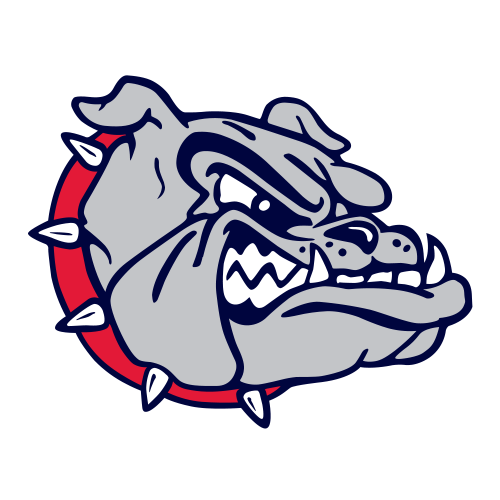
GonzagaLast season | 30-3 (16-2 WCC) | No. 3 seed, NCAA Second Round loss to No. 11 Texas
- Players to watch
- G Davis Fogle
F Braden Huff - Bracket prediction
- No. 1 seed, 1st in Pac-12
What to expect this season
Gonzaga opens as the AP No. 15 team in the country and enters as the overwhelming favorite for the conference crown in the new era of Pac-12 basketball. Mark Few’s team returns a proven frontcourt presence in Braden Huff while continuing to reload with talented newcomers, including Florida transfer Xaivian Lee and Arizona State transfer Massamba Diop, the No. 6 overall player in the transfer portal. Gonzaga has the size, offensive versatility, and postseason pedigree to separate itself from the competition, although road trips to Utah State and San Diego State should provide more consistent challenges than the Bulldogs have faced in recent WCC play. Anything short of a conference championship and another strong March Madness run would be a disappointment in Spokane.
Bold predictionThe Bulldogs go undefeated in their inaugural Pac-12 conference schedule and earn a No. 1 seed in the NCAA Tournament.
2
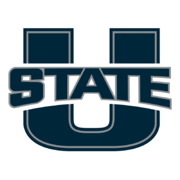
Utah StateLast season | 29-7 (15-5 MW) | No. 9 seed, NCAA Second Round loss to No. 1 Arizona
- Players to watch
- G Mason Falslev
G Dallin Hall - Bracket prediction
- No. 9 seed, 2nd in Pac-12
What to expect this season
Utah State enters its first Pac-12 campaign with a championship-caliber backcourt and a new face on the sideline. Ben Jacobson takes over a program fresh off Mountain West regular-season and tournament championships, with Mason Falslev returning as the centerpiece. The Aggies will face a significant step up in competition, especially against Gonzaga and San Diego State, but their veteran guard play should keep them among the league’s best. If Jacobson can establish a reliable defensive identity and find enough production in the frontcourt, Utah State has a legitimate opportunity to earn another NCAA Tournament invitation.
Bold predictionMason Falslev wins Pac-12 Player of the Year, becoming the first Aggie to capture the award.
3
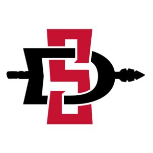
San Diego StateLast season | 22-11 (14-6 MW)
- Players to watch
- G Elzie Harrington
F Tae Simmons - Bracket prediction
- 3rd in Pac-12
What to expect this season
San Diego State enters the rebuilt Pac-12 with an opportunity to establish itself as Gonzaga’s primary challenger. Brian Dutcher’s program has built a national reputation for physical defense and postseason success, but improved offensive consistency will be critical against a more competitive conference schedule. Elzie Harrington and Tae Simmons headline an Aztec roster looking to replace important contributors from last season. San Diego State’s defensive identity should keep it competitive against virtually every conference opponent, although its NCAA Tournament aspirations may depend on developing reliable scoring options. The Aztecs have the talent and coaching to contend for a top-three Pac-12 finish.
Bold predictionThe Aztecs win the inaugural Pac-12 Tournament, defeating Gonzaga in the title game.
4
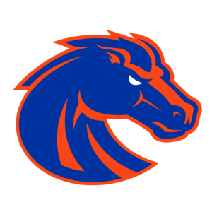
Boise StateLast season | 20-12 (12-8 MW)
- Players to watch
- F Dovydas Butka
G Damari Wheeler-Thomas - Bracket prediction
- 4th in Pac-12
What to expect this season
Boise State moves into the Pac-12 looking to maintain the consistency that has defined Leon Rice’s tenure. The Broncos return an important frontcourt contributor in Dovydas Butka and an experienced guard in Damari Wheeler-Thomas. While Boise State has regularly positioned itself among the Mountain West’s top programs, the addition of Gonzaga and a more demanding conference schedule raise the difficulty of reaching the NCAA Tournament. The Broncos have the experience and defensive toughness to compete with almost anyone in the league, but finding dependable scoring will be essential if they hope to climb into the upper echelon of the standings.
Bold predictionLeon Rice leads the Broncos to 23 wins and an at-large NCAA Tournament bid despite being picked outside the Pac-12’s top three.
5
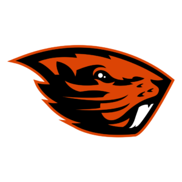
Oregon StateLast season | 17-16 (9-9 WCC)
- Players to watch
- G Josiah Lake II
G Daniel Freitag - Bracket prediction
- 5th in Pac-12
What to expect this season
Oregon State welcomes a new era of basketball under first-year head coach Justin Joyner. The Beavers have assembled an athletic roster highlighted by Josiah Lake II and Daniel Freitag, two guards expected to be central to the team’s offensive identity. After a middling final season in the WCC, Oregon State faces the challenge of establishing itself in a conference that now features several nationally relevant programs. The Beavers have enough talent to challenge the league’s upper tier, but success will depend on how quickly their new pieces develop chemistry and whether they can compete consistently on the defensive end.
Bold predictionThe Beavers pull off a major home upset against Utah State, handing the Aggies their first conference loss in the new Pac-12.
6Colorado State
Last season | 21-13 (11-9 MW) | NIT First Round
- Players to watch
- F Kyle Jorgensen
G Jase Butler - Bracket prediction
- 6th in Pac-12
What to expect this season
Colorado State enters its first Pac-12 season looking to build momentum under second-year head coach Ali Farokhmanesh. After a 21-win campaign in 2025-26, the Rams return Kyle Jorgensen and Jase Butler as important pieces of their offensive rotation. Colorado State has the potential to establish itself as one of the Pac-12’s more competitive teams, particularly if its returning contributors develop into consistent scoring threats. Although Gonzaga and Utah State enter the season with greater national expectations, the Rams should have opportunities to challenge for a top-three conference finish. A return to postseason contention will depend on their ability to compete with the league’s deeper rosters.
Bold predictionThe Rams finish second in the Pac-12, ahead of both Utah State and San Diego State, and earn an NCAA Tournament bid.
7
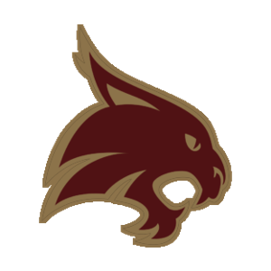
Texas StateLast season | 19-13 (11-7 Sun Belt)
- Players to watch
- F DJ Hall
F Paul Djobet - Bracket prediction
- 7th in Pac-12
What to expect this season
Texas State faces one of the most significant transitions in program history as the Bobcats leave the Sun Belt for the rebuilt Pac-12. After a 19-win season, Texas State must adapt to a substantially more difficult conference schedule featuring basketball powers such as Gonzaga and San Diego State. DJ Hall and Paul Djobet give the Bobcats frontcourt talent, while transfer guard Quel’Ron House should play an important role directing the offense. Texas State has an opportunity to prove it belongs in its new conference, but a successful inaugural season may be measured more by competitiveness and growth than by NCAA Tournament aspirations.
Bold predictionDJ Hall averages 20 points and eight rebounds per game, earning first-team All-Pac-12 honors in the Bobcats’ inaugural season.
8
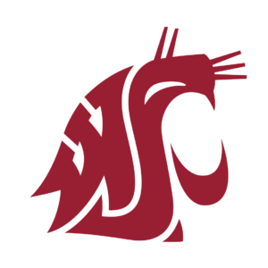
Washington StateLast season | 12-20 (7-11 WCC)
- Players to watch
- F Ronnie Harrison
F Ladji Dembele - Bracket prediction
- 8th in Pac-12
What to expect this season
Washington State returns to Pac-12 basketball hoping to rebound from a disappointing 12-win campaign. The Cougars have intriguing frontcourt talent in Ronnie Harrison and Ladji Dembele, but questions remain about the team’s defensive consistency and ability to protect the rim. Washington State will need more reliable production from its supporting cast to compete with the conference’s established contenders. The return of a recognizable Pac-12 schedule presents an opportunity for the Cougars to regain momentum, although climbing into the upper half of the standings will be a significant challenge. Improving on last year’s overall record should be the program’s immediate objective.
Bold predictionThe Cougars improve by at least eight wins, reaching the 20-win mark despite being picked eighth in the Pac-12.
9
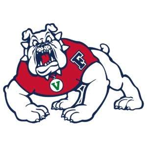
Fresno StateLast season | 13-19 (7-13 MW)
- Players to watch
- F Brady Henige
G Ross Candelino - Bracket prediction
- 9th in Pac-12
What to expect this season
Fresno State faces a difficult inaugural Pac-12 campaign after finishing below .500 in its final Mountain West season. The Bulldogs are looking to establish a more competitive identity, with Brady Henige and Ross Candelino among the players expected to lead the way. Fresno State’s inexperienced backcourt could struggle against conference opponents with established guard combinations and more consistent offensive production. Although the Bulldogs have pieces capable of keeping them competitive, their biggest objective will be developing a reliable rotation and improving on last season’s results. With a demanding conference schedule ahead, avoiding the bottom of the Pac-12 standings would be an encouraging step forward.
Bold predictionThe Bulldogs finish outside the Pac-12 basement and pull off a home upset over either Boise State or Colorado State.
Mountain West
1
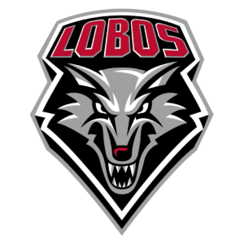
New MexicoLast season | 26-11 (13-7 MW) | NIT Semifinals
- Players to watch
- G Jake Hall
G Uriah Tenette - Bracket prediction
- No. 9 seed, 1st in Mountain West
What to expect this season
After reaching the NIT semifinals last season, New Mexico enters the new-look Mountain West as a legitimate championship contender. Sophomore Jake Hall returns after averaging 16.4 points per game and knocking down 117 three-pointers, giving head coach Eric Olen one of the conference’s most dangerous scorers. Alongside Uriah Tenette, Hall anchors a backcourt capable of carrying the Lobos through their conference schedule. New Mexico will need consistent rebounding and interior defense from its retooled frontcourt, but the talent is there to return to the NCAA Tournament for the first time under Olen.
Bold predictionJake Hall leads the Mountain West in scoring and carries New Mexico to its first Sweet 16 appearance since 1974.
2Grand Canyon
Last season | 20-12 (13-7 MW)
- Players to watch
- G Makaih Williams
G Dylan Darling - Bracket prediction
- No. 11 seed, 2nd in Mountain West
What to expect this season
Grand Canyon enters its second Mountain West season expecting to compete for the conference championship. Makaih Williams returns after averaging 14 points per game, while Dylan Darling provides another experienced perimeter creator. Head coach Bryce Drew has supplemented that returning production with an athletic group of transfers that should give the Lopes versatility on both ends of the floor. With several traditional conference powers departing for the Pac-12, Grand Canyon has a tremendous opportunity to become one of the Mountain West’s flagship basketball programs. Whether the Lopes can find consistent perimeter shooting could determine if they capture the conference’s automatic NCAA Tournament bid.
Bold predictionThe Lopes win the Mountain West Tournament in their second year as conference members and secure an automatic NCAA Tournament bid.
3
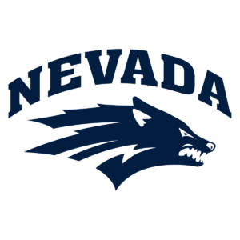
NevadaLast season | 24-13 (12-8 MW) | NIT Quarterfinals
- Players to watch
- F Elijah Price
G Styles Phipps - Bracket prediction
- 3rd in Mountain West
What to expect this season
Nevada enters the season with considerable motivation as head coach Steve Alford prepares for his final year in Reno. The Wolf Pack return Elijah Price, who averaged 12.8 points, 8.5 rebounds, and 1.7 blocks last season, giving them one of the conference’s most dependable interior players. Pepperdine transfer Styles Phipps adds scoring and playmaking to a retooled backcourt. With a strong combination of returning production and incoming talent, Nevada should contend for the Mountain West title. The Wolf Pack’s chances of returning to the NCAA Tournament will depend on improving offensive efficiency and building a reliable perimeter attack around Price.
Bold predictionSteve Alford closes his Nevada tenure by winning the Mountain West regular-season championship.
4
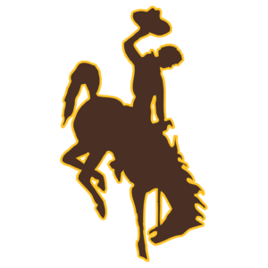
WyomingLast season | 18-15 (9-11 MW) | NIT First Round
- Players to watch
- G Nasir Meyer
G Khaden Bennett - Bracket prediction
- 4th in Mountain West
What to expect this season
Wyoming enters its third season under Sundance Wicks with the opportunity to take a meaningful step forward. The Cowboys return Nasir Meyer, Khaden Bennett, and Gavin Gores, giving them a foundation of returning experience that many conference rivals lack. That continuity could become a significant advantage in a Mountain West undergoing widespread roster turnover and realignment. Wyoming must improve its offensive consistency to challenge the league’s favorites, but the Cowboys have the personnel to outperform their fifth-place preseason media projection. A top-four conference finish would signal encouraging progress for Wicks’ program.
Bold predictionThe Cowboys finish in the Mountain West’s top three and record their first 20-win season since 2021-22.
5
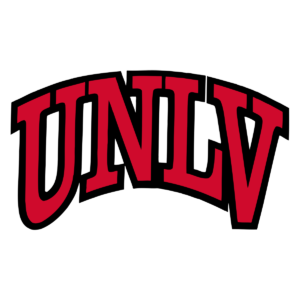
UNLVLast season | 18-17 (11-9 MW) | NIT Second Round
- Players to watch
- G Sebastian Mack
F Tyrin Jones - Bracket prediction
- 5th in Mountain West
What to expect this season
UNLV enters Josh Pastner’s second season with aspirations of returning to the top of the Mountain West. The Rebels reached the second round of the NIT in his debut campaign and have reshaped their roster to become more competitive. Sebastian Mack offers offensive firepower on the perimeter, while returning forward Tyrin Jones provides an interior presence when healthy. UNLV’s biggest challenge may be developing chemistry and overcoming injury concerns among its returning contributors. The Rebels have enough individual talent to challenge the league’s best programs, but improved defense and offensive consistency will be necessary to make their first NCAA Tournament appearance since 2013.
Bold predictionThe Runnin’ Rebels end their NCAA Tournament drought, earning their first March Madness appearance since 2013.
6
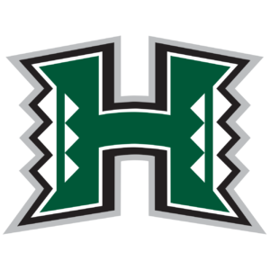
Hawai’iLast season | 24-9 (14-6 Big West) | No. 13 seed, NCAA First Round loss to No. 4 Arkansas
- Players to watch
- G Isaiah Kerr
F/C Bol Dengdit - Bracket prediction
- 6th in Mountain West
What to expect this season
Hawai’i makes the move to the Mountain West following a successful final Big West season that included 24 victories and an NCAA Tournament appearance. However, the Rainbow Warriors will look considerably different after significant roster turnover. Isaiah Kerr provides returning experience in the backcourt, while UC San Diego transfer Bol Dengdit adds proven interior scoring and size. Head coach Eran Ganot must integrate a new rotation while adjusting to a conference with deeper and more physical competition. Hawai’i has the potential to challenge the middle of the Mountain West standings, although duplicating last season’s postseason success will be more difficult without more established continuity.
Bold predictionThe Rainbow Warriors upset both New Mexico and Grand Canyon at home, establishing themselves as the Mountain West’s toughest home-court opponent.
7UC Davis
Last season | 19-14 (11-9 Big West)
- Players to watch
- G Connor Sevilla
G Brayden Fagbemi - Bracket prediction
- 7th in Mountain West
What to expect this season
UC Davis enters its first Mountain West campaign with an experienced backcourt that could make the Aggies a challenging opponent. Connor Sevilla returns after averaging 13.3 points per game and shooting nearly 40 percent from three-point range, while Brayden Fagbemi provides playmaking and perimeter defense. Their continuity gives Jim Les an important advantage as the program transitions from the Big West. However, the Aggies will need improved interior production and rebounding to compete against the conference’s more physical opponents. UC Davis could emerge as a sleeper if its returning guards maintain their production, but a lower-middle finish remains the more realistic expectation.
Bold predictionConnor Sevilla leads the Mountain West in three-point percentage, helping UC Davis finish above .500 in conference play.
8
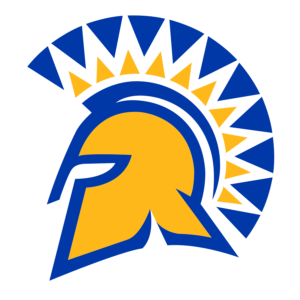
San Jose StateLast season | 9-24 (3-17 MW)
- Players to watch
- G Joey Chammaa
F Mookie Cook - Bracket prediction
- 8th in Mountain West
What to expect this season
San Jose State enters the season looking to make considerable improvements following a nine-win campaign. Head coach Tim Miles has added offensive options, including Arkansas State transfer Joey Chammaa and versatile forward Mookie Cook. The Spartans also bring in Zine Eddine Bedri, who averaged 12.8 points and 7.4 rebounds at Columbia. With several new contributors, San Jose State has more offensive potential than last year’s record might suggest. However, defensive rebounding, player availability, and establishing a consistent rotation remain major concerns. The Spartans could surprise opponents if their newcomers develop chemistry quickly, but reaching the upper half of the Mountain West remains an ambitious goal.
Bold predictionThe Spartans finish in the top half of the Mountain West, with Mookie Cook earning all-conference recognition.
9
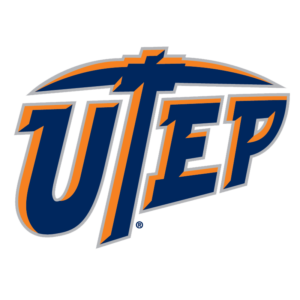
UTEPLast season | 11-20 (7-13 CUSA)
- Players to watch
- G Leif Moeller
G Jace Whiting - Bracket prediction
- 9th in Mountain West
What to expect this season
UTEP returns to the Mountain West for the first time since 1999, although the Miners face a significant rebuilding challenge following an 11-win season. Head coach Joe Golding has assembled an almost entirely new roster, with Evansville transfer Leif Moeller expected to provide leadership at point guard after averaging 10.8 points and four assists per game last season. Jace Whiting adds another experienced ball handler to the rotation. UTEP has enough offensive options to improve on last year’s performance, but developing chemistry and establishing a consistent defensive identity will be major challenges. The Miners may struggle against the league’s most established contenders while the roster finds its footing.
Bold predictionThe Miners upset a top-three Mountain West team on the road and finish with at least 17 victories.
10
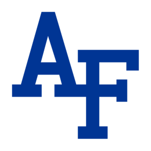
Air ForceLast season | 3-29 (0-20 MW)
- Players to watch
- G Kam Sanders
G Lucas Hobin - Bracket prediction
- 10th in Mountain West
What to expect this season
Air Force enters 2026-27 hoping to recover from one of the most difficult seasons in program history. The Falcons finished without a conference victory last year, prompting a coaching change and the arrival of Joe Crispin. Unlike many programs around the conference, Air Force returns a substantial portion of its roster, including leading contributors Kam Sanders and Lucas Hobin. Crispin is expected to emphasize a faster offensive approach that could help the Falcons generate more scoring opportunities. However, significant improvements in defense and rebounding will be necessary before Air Force can realistically challenge the Mountain West’s upper tier. Even a handful of conference victories would represent measurable progress.
Bold predictionThe Falcons go from zero Mountain West victories last season to at least six conference wins under Joe Crispin.
Conference USA
6
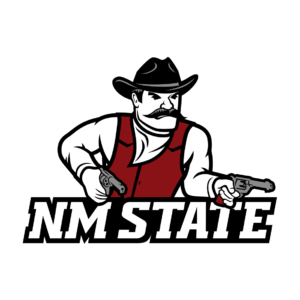
New Mexico StateLast season | 16-16 (8-12 CUSA)
- Players to watch
- G DJ Dudley
G KK Robinson - Bracket prediction
- 6th in CUSA
What to expect this season
New Mexico State enters the 2026-27 campaign hoping to bounce back from a disappointing 8-12 conference record. Head coach Jason Hooten has added proven offensive talent, highlighted by Louisiana Tech transfer DJ Dudley, who averaged 13.8 points per game and earned third-team All-Conference USA honors last season. Dudley gives the Aggies an established perimeter scorer, while veteran guard KK Robinson adds experience to the backcourt. New Mexico State was picked sixth in the Conference USA preseason poll, but improved shooting and defensive consistency could help the Aggies challenge for the upper half of the league.
Bold predictionDJ Dudley earns first-team All-Conference USA honors and leads the Aggies to a top-three conference finish.
Horizon League
10
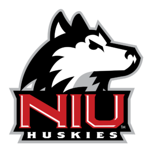
Northern IllinoisLast season | 9-21 (4-14 MAC)
- Players to watch
- G Cal Klesmit
G Max Weisbrod - Bracket prediction
- 10th in Horizon League
What to expect this season
Northern Illinois begins a new chapter with its move from the MAC to the Horizon League and the arrival of head coach Matt Majkrzak. After winning just nine games last season, the Huskies have restructured their roster with several players familiar with Majkrzak’s system at Northern Michigan. The rebuild will depend on how effectively those newcomers transition to Division I basketball. Northern Illinois was picked 10th in the Horizon League preseason poll, although an unfamiliar roster makes the Huskies an intriguing wild card. Building a more efficient offense could help the program surpass expectations in its inaugural Horizon League campaign.
Bold predictionThe Huskies double their win total from last season, reaching 18 victories in their first Horizon League campaign.
Summit League
1North Dakota State
Last season | 27-8 (14-2 Summit) | No. 14 seed, NCAA First Round loss to No. 3 Michigan State
- Players to watch
- G Andy Stefonowicz
G Melvin Bell - Bracket prediction
- No. 14 seed, 1st in Summit
What to expect this season
North Dakota State returns to the hardwood following a historic 27-win season that included regular-season and tournament titles and an NCAA Tournament appearance. However, David Richman faces the challenge of replacing nearly his entire starting lineup, with Andy Stefonowicz the lone returning starter. The Bison have added 13 newcomers, making team chemistry and player development especially important during non-conference play. Despite the turnover, North Dakota State was picked as the Summit League preseason favorite, a sign that expectations remain high in Fargo. A return trip to March Madness is achievable, although St. Thomas and South Dakota State should provide substantial competition.
Bold predictionThe Bison repeat as Summit League champions despite returning only one starter, earning back-to-back NCAA Tournament appearances.
Big West
7Sacramento State
Last season | 10-21 (6-12 Big Sky)
- Players to watch
- G Larry Hughes II
G Mikey Williams - Bracket prediction
- 7th in Big West
What to expect this season
Sacramento State enters its first Big West season with one of the conference’s most intriguing rosters under head coach Mike Bibby. The Hornets have added All-Big West guard Larry Hughes II, while Mikey Williams returns to a team looking to make major improvements following a 10-win campaign. The addition of experienced transfers gives Sacramento State more offensive potential, but the challenge will be turning individual talent into consistent team success. The Hornets were picked seventh in the Big West preseason coaches’ poll, and a middle-of-the-pack finish would be a positive first step for a program establishing a new identity in a new conference.
Bold predictionLarry Hughes II and Mikey Williams combine to average more than 35 points per game, leading the Hornets to a winning record in their first Big West season.